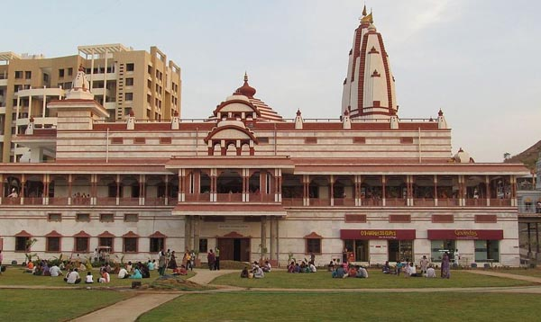

Sri Sri Radha Banke Bihari Ji Mandir
The proper name of ISKCON Temple in Patna is Sri Sri Radha Banke Bihari Ji Mandir. The temple is located in Buddha Marg in Patna in the Indian state of Bihar. The entire ISKCON temple network is dedicated to Radha and Krishna and is a Hindu temple. It is currently under construction but is expected to become an important spiritual center for devotees from across Bihar and beyond.
Temple
History
The International Society for Krishna Consciousness (ISKCON), also known as the Hare Krishna movement, was founded on July 13, 1966, in New York City by A.C. Bhaktivedanta Swami Prabhupada. It is rooted in the Gaudiya Vaishnavism tradition of Hinduism. The movement spreads the teachings of the Bhagavad Gita, emphasizing Bhakti Yoga—devotion to Lord Krishna, who is considered the Supreme Personality of Godhead. There are over 550 ISKCON centers worldwide, including the Sri Sri Radha Banke Bihari Ji Temple in Patna.
Architectural Significance
The ISKCON temple in Patna is being built in the traditional Hindu temple style with a budget of ₹51 crores, spanning over 2 acres. It is set to be the largest building in Patna and the biggest Radha Krishna temple in Bihar and Jharkhand. The sanctum will house deities of Sri Sri Gaur Nitai, Sri Sri Radha Banke Bihari Ji, and Sri Sri Ram Durbar in three separate halls. Idols will be 3 feet tall on 24-carat gold-plated thrones. The temple will have 84 pillars, several spires, a Gurukula, a book distribution center, a vegetarian restaurant, and a peaceful, bell-free environment.
Location
| Location | Patna |
|---|---|
| State | Bihar |
| Country | India |
Official Website
Official website
Click here to open official website
Accommodation
Here are the hotels available near Sri Sri Radha Banke Bihari Ji Temple, Patna.
Book a room
Bhagavad Gita Slokam
Chapter 9, Verse 26
पत्रं पुष्पं फलं तोयं यो मे भक्त्या प्रयच्छति |
तदहं भक्त्युपहृतमश्नामि प्रयतात्मन: || 26 ||
patraṁ puṣhpaṁ phalaṁ toyaṁ yo me bhaktyā prayachchhati
tadahaṁ bhaktyupahṛitam aśhnāmi prayatātmanaḥ
Translation
If one offers to Me with devotion a leaf, a flower, a fruit, or even water, I delightfully partake of that item offered with love by My devotee in pure consciousness.